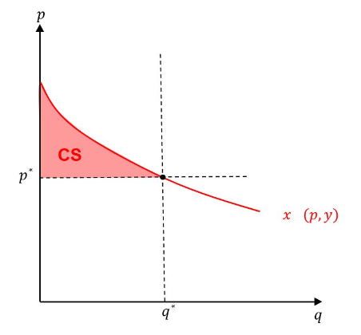

Two unknowns: the equilibrium price \(\widehat p\) and the number of active firms \(\widehat N_{LR}=|\widehat J_{LR}|\) must be determined jointly.
Why does price equal minimum average cost?
\[\widehat p=\min_{q>0}AC(q).\]
\(p>\min AC\) → some output earns positive profit → entry.
\(p<\min AC\) → every positive output makes a loss → exit.
\(p=\min AC\) → an active firm breaks even at its optimal output.
At a differentiable interior minimum, \(\widehat p=AC(q_{LR})=MC(q_{LR})\). Market demand then determines how many firms are needed at that output.
Economic profit includes opportunity costs. Zero profit relies on free entry; barriers to entry or scarce inputs can sustain rents.
04 · Existence & uniqueness
Does an Equilibrium Exist? Is It Unique?
Let excess demand be \(Z(p)=Q^d(p)-Q^s(p)\). Market clearing means \(Z(p^*)=0\).
Existence: at least one price
Demand and supply are continuous on \([p_L,p_H]\).
At low prices: demand > supply.
At high prices: supply > demand.
The intermediate value theorem gives a clearing price between \(p_L\) and \(p_H\).
Uniqueness: at most one price
Demand is nonincreasing in price.
Supply is nondecreasing in price.
At least one is strictly monotone.
Then \(Z\) is strictly decreasing: if an equilibrium exists, its price is unique.
Multiple equilibria: upward-sloping demand over some ranges (e.g. Giffen behavior) can produce several intersections with supply. Flat overlapping segments can also give several clearing prices.
Can discontinuous quantities still clear the market?
Possible mismatch: at a given price, one buyer wants 2 units while one firm optimally supplies either 0 or 3. The market does not clear at that price; ruling out equilibrium altogether requires checking all prices.
A larger market may clear: at a common price, three buyers demanding 2 units each can trade with two firms supplying 3 units each:
\[Q^d=3\times2=6=2\times3=Q^s.\]
Continuity is a sufficient condition for the existence argument above, not a necessary condition for equilibrium.
05 · Welfare measures
Consumer and Producer Surplus
Consumer surplus · \(CS\)
Benefit: willingness to pay minus the amount actually paid.
On the graph: area below demand and above the price \(p^*\).
\[CS(p^*)=\int_{p^*}^{\infty}Q^d(t)\,dt.\]
If demand is zero above a choke price \(p_{\max}\), the upper bound can be replaced by \(p_{\max}\). Otherwise, the integral must converge.

The slide writes demand as \(x(p,y)\); here it is \(Q^d(p)\), holding income fixed.
Welfare interpretation: consumer surplus measures welfare changes exactly when there are no income effects (e.g. quasilinear utility). Otherwise it is generally an approximation.